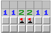
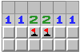

Pravidla a ovládání hry jsou jednoduchá.
Hráč se na mřížce snaží odhalit bezpečná pole a označit miny. Bezpečná pole jsou prázdná pokud se
nedotýkají žádné miny nebo mají číslo od 1 do 8, které značí počet min okolo tohoto pole. Tato pole se min
dotýkají stranou nebo rohem. Pokud hráč klikne na pole s minou, prohrává a hra končí. Vyhrát lze jedině
odhalením všech bezpečných polí. Pokud hráč neoznačil všechna místa s minou, po výhře se sama odhalí.
Hra se ovládá pouze myší. Levé talčítko je pro odhalení pole, pravé pro označení pole vlaječkou. Dvakrát pravé
ozančí místo otazníkem. Používa se pro označení pole, kde si hráč není jistý. Levé a pravé najednou na již odhalené
pole po označení všech min, kterých se pole dotýka, odhalí zbylá prázdná pole.
Tipy a strategie
Pro každou hru existují nějaké tipy a strategie jak být lepší a v téhle hře jich existuje spousta.
Asi tou první je se vždy dobře zamyslet, jelikož jde o logickou hru.
Druhou je vyhnout se stěnám. Nejprve by hráč měl vyčistit sřed a až později se vrhnout na kraje pole.
Další je osvojit si jednoduché i složitější vzorce. Většinou hráč, který hru hraje často si jich začne všímat přirozeně.
 

Zde jsou odkazy na stánky, které se tímto tématem zabývají:
minesweepergame.com/strategy
www-cs-students.stanford.edu/~jl/Essays/minesweeper